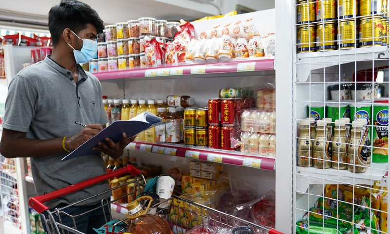
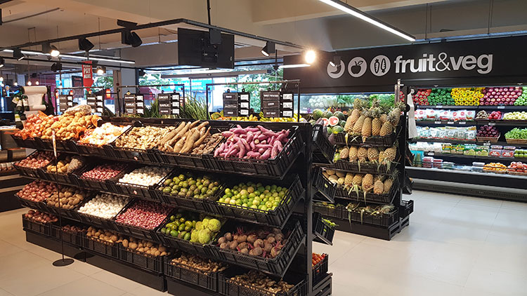
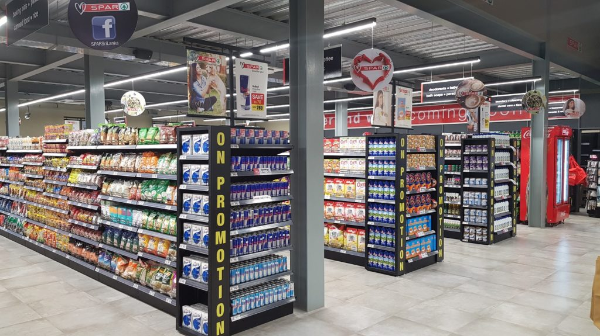

ABOUT US

FreshMart Colombo is the best place to go for the freshest, best-quality goods and daily necessities, and it's right in the middle of the busy capital city. With convenience, variety, and top-notch service, our Colombo branch is committed to providing you with an unmatched shopping experience.

The finest spot to get everyday basics and the freshest, highest-quality goods is FreshMart dehiwala, which is conveniently located in the heart of the bustling capital city. Our Colombo store is dedicated to giving you the best possible shopping experience with convenience, variety, and first-rate service.

Right in the heart of the bustling capital city, FreshMart WATTALA is the finest spot to shop for the freshest, highest-quality products and everyday necessities. With an unparalleled shopping experience, our Colombo branch is dedicated to providing you with convenience, variety, and excellent service.
| SERVICES | DESCRIPTION | TIME |
|---|---|---|
| DELIVERY | Supermarket delivery services offer customers the convenience of having their groceries delivered to their homes. They require an online or mobile app order, product selection, and delivery time. Store employees carefully pack and deliver items, with some offering same-day or next-day delivery options. | 8.00AM TO 10.00PM |
| CATERING | Supermarket catering services offer a variety of dishes, prepared by the supermarket's deli or kitchen, for various events. Customers can choose from set menus or customize orders, making them affordable and convenient for parties, meetings, or family gatherings. | Depends on booking hours |
| PARTY PLANNING | Our supermarket provides a convenient party planning service for birthdays, anniversaries, and special events, ensuring a memorable and hassle-free experience for all involved. | Depends on booking hours |